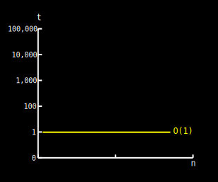
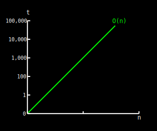
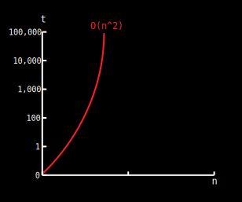
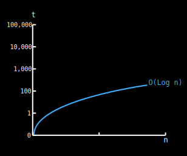
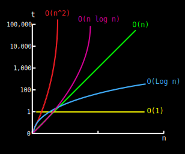

HOW TO DETERMINE COMPLEXITIES
We can determine complexity based on the type of statements used by a program. The following examples are in java but can be easily followed if you have basic programming experience and use big O notation we will explain later why big O notation is commonly used:
Constant time: O(1)
The following operations take constant time:
- Assigning a value to some variable
- Inserting an element in an array
- Determining if a binary number is even or odd.
- Retrieving element i from an array
- Retrieving a value from a hash table(dictionary) with a key
They take constant time because they are "simple" statements. In this case we say the statement time is O(1)
int example = 1;
As you can see in the graph below constant time is indifferent of input size. Declaring a variable, inserting an element in a stack, inserting an element into an unsorted linked list all these statements take constant time.
Linear time: O(n)
The next loop executes N times, if we assume the statement inside the loop is O(1), then the total time for the loop is N*O(1), which equals O(N) also known as linear time:
for (int i = 0; i < N; i++) {
//do something in constant time...
}
In the following graph we can see how running time increases linearly in relation to the number of elements n:
More examples of linear time are:
- Finding an item in an unsorted collection or a unbalanced tree (worst case)
- Sorting an array via bubble sort
Quadratic time: O(n2)
In this example the first loop executes N times. For each time the outer loop executes, the inner loop executes N times. Therefore, the statement in the nested loop executes a total of N * N times. Here the complexity is O(N*N) which equals O(N2). This should be avoided as this complexity grows in quadratic time
for (int i=0; i < N; i++) {
for(int j=0; j< N; j++){
//do something in constant time...
}
}
Some extra examples of quadratic time are:
- Performing linear search in a matrix
- Time complexity of quicksort, which is highly improbable as we will see in the Algorithms section of this website.
- Insertion sort
Algorithms that scale in quadratic time are better to be avoided. Once the input size reaches n=100,000 element it can take 10 seconds to complete. For an input size of n=1’000,000 it can take ~16 min to complete; and for an input size of n=10’000,000 it could take ~1.1 days to complete...you get the idea.
Logarithmic time: O(Log n)
Logarithmic time grows slower as N grows. An easy way to
check if a loop is log n is to see if the counting variable
(in this case: i) doubles instead of incrementing by 1. In
the following example
int i
doesn’t increase by 1 (i++), it doubles with each run thus
traversing the loop in log(n) time:
for(int i=0; i < n; i *= 2) {
//do something in constant time...
}
Some common examples of logarithmic time are:
- Binary search
- Insert or delete an element into a heap
Don't feel intimidated by logarithms. Just remember that logarithms are the inverse operation of exponentiating something. Logarithms appear when things are constantly halved or doubled.
Logarithmic algorithms have excellent performance in large data sets:
Linearithmic time: O(n*Log n)
Linearithmic algorithms are capable of good performance with very large data sets. Some examples of linearithmic algorithms are:
- heapsort
- merge sort
- Quick sort
We'll see a custom implementation of Merge and Quicksort in the algorithms section. But for now the following example helps us illustrate our point:
for(int i= 0; i< n; i++) { // linear loop O(n) * ...
for(int j= 1; j< n; j *= 2){ // ...log (n)
//do something in constant time...
}
}
Conclusion
As you might have noticed, Big O notation describes the worst case possible. When you loop through an array in order to find if it contains X item the worst case is that it’s at the end or that it’s not even present on the list. Making you iterate through all n items, thus O(n). The best case would be for the item we search to be at the beginning so every time we loop it takes constant time to search but this is highly uncommon and becomes more improbable as the list of items increases. In the next section we'll look deeper into why big O focuses on worst case analysis.
A comparison of the first four complexities, might let you understand why for large data sets we should avoid quadratic time and strive towards logarithmic or linearithmic time:
